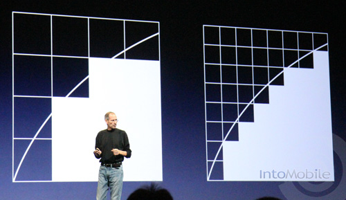

HTML5
Mobile Strategies
Tomomi Imura
October 15, 2012

Mobile Strategies
Tomomi Imura
October 15, 2012
Hello
my name is
Tomomi
@girlie_mac


A super silly example I wrote: RespongeBob Web

@media handheld {
/* Some mobile-specific CSS here */
}
Only supported by:

Controlling the presentation of content without modifying the content itself.

Separate styles by the width of the target viewport (browser display area)
@media only screen
and (min-width : 768px)
and (max-width : 1024px) {
/* Styles */
}
by device-width, the width of the device's screen size
@media only screen
and (min-device-width : 320px)
and (max-device-width : 480px) {
/* Styles */
}
combined with screen orientations
@media only screen
and (min-device-width : 768px)
and (max-device-width : 1024px)
and (orientation : landscape) {
/* Styles */
}...
separate styles by device pixel ratio


When a browser maps one pixel to one high resolution screen pixel, text and images of the web sites made for smaller resolution displays become too small.

Automatically scale up the UI and content (fit to HVGA, for instance).
window.devicePixelRatio
e.g.
| Device | Browser | Pixel Density |
|---|---|---|
| Nexus One | Android browser | 1.5 |
| Galaxy Nexus | Chrome | 2.0 |
| Galaxy Nexus | Opera Mobile | 2.25 |
@media only screen and (-webkit-min-device-pixel-ratio: 2),
only screen and (min-device-pixel-ratio: 2) {
//some hi-res css
}
e.g.
with a zoom factor of 150% (e.g. 320px to 480px)
@media only screen and (-webkit-min-device-pixel-ratio: 1.5) {...}
@media only screen and (min--moz-device-pixel-ratio: 1.5) {...}
@media only screen and (-o-min-device-pixel-ratio: 3/2) {...}
@media (-webkit-min-device-pixel-ratio: 2), /* Webkit */
(min-resolution: 192dpi) /* Moz & Opera */ {
...
}
Typical Screen: 96dpi (96px = 1in in CSS units)
@media (-webkit-min-device-pixel-ratio: 2),
(min-resolution: 2dppx) /* Future */ {
...
}

.banner {
background-image: url(banner.png);
width: 320px; height: 160px;
}
@media only screen and (-webkit-min-device-pixel-ratio: 2),
only screen and (min-resolution: 192dpi) {
.banner {
background-image: url(banner-2x.png);
background-size: 100%;
}
}
<img src="logo.svg" width="">

<picture width="500" height="500"> <source media="(min-width: 45em)" srcset="large-1.jpg 1x, large-2.jpg 2x"> <source media="(min-width: 18em)" srcset="med-1.jpg 1x, med-2.jpg 2x"> <source srcset="small-1.jpg 1x, small-2.jpg 2x"> <img src="fallback.jpg" > </picture>
The Picture Element draft by W3C Responsive Images Community Group
mediaQueryList = window.matchMedia(mediaQueryString);
Example:
var mql = window.matchMedia('(orientation:landscape)');
if (mql.matches) {
/* the current orientation is in landscape */
} else {
/* portrait */
}

* Use Shim or pollyfill like Modernizr for the rescue.
:hoverpointer - accuracy of a pointing device. none, coarse, fine. "Fat Finger"
hover - 0 or 1
Old-school from XHTML-MP by OMA and still rocks
<a href="tel:+14155557777">Order Pizza Now!</a>
<a href="sms:+14155558888?body=Hello">Text me!</a>
if (navigator.geolocation) {
navigator.geolocation.getCurrentPosition(success, fail);
}
function success(position) {
alert('Latitude: ' + position.coords.latitude +
', Longitude: ' + position.coords.longitude);
}
W3C Geolocation Working Group


Gyroscope, Accelerometer, Compass

Events: deviceorientation, devicemotion, compassneedscalibration
Try it on supported browsers: http://goo.gl/5Cj4d

WebRTC "Web Real Time Communications"
navigator.getUserMedia({video: true, audio: true},
onSuccess, onError);
// with prefix. Chrome desktop only. Moz mobile only. navigator.webkitGetUserMedia(...); navigator.mozGetUserMedia(...);
The super silly demo again: RespongeBob Web / Make Me Bob!
Web Real-Time Communications Working Group | Web RTC
<input type="file" accept="image/*" capture="camera">
| Keywords | State | Capture control type |
|---|---|---|
camera | Image Capture | A camera |
camcorder | Video Capture | A video camera |
microphone | Sound Capture | A sound recorder |
filesystem | File Upload | A generic file picker |
var battery = navigator.battery ||
navigator.mozBattery* || navigator.webkitBattery;
function updateBatteryStatus() {
alert("Battery status: " + battery.level * 100 + " %");
if (battery.charging) {
alert("Battery is charging");
}
}
battery.addEventListener("chargingchange",
updateBatteryStatus);

Try it on Firefox Mobile: http://goo.gl/V1n6h

navigator.vibrate(1000); // vibrate for 1sec
navigator.vibrate([1000, 500, 2000]); // vibrates for 1sec, still for 0.5 seconds, // and vibrates again for 2sec
navigator.mozVibrate(...);
Try it on Firefox Mobile: http://goo.gl/EWPmL

window.addEventListener('devicelight', function(event) {
alert(event.value);
});
| Sensor Value | Lightning Condition | My Observation on Galaxy Nexus |
|---|---|---|
| < 300 lux | Dim | Indoor |
| 400-1000 lux | Normal | By window. Outdoor (Cloudy) |
| > 1000 lux | Light | Outdoor Daylight? Can't test in foggy SF :-( |
Try it on Firefox Mobile: http://goo.gl/WynKX
var intent = new Intent({
action: "http://webintents.org/pick",
type "http://w3.org/type/contact",
extras: {fields: ["displayName", "emails"]}
});
navigator.startActivity(intent, onSuccess, onFail);


Mobile Web App Profile

Google Docs: http://goo.gl/Jdckj
Tomomi Imura
http://girliemac.com
@girlie_mac